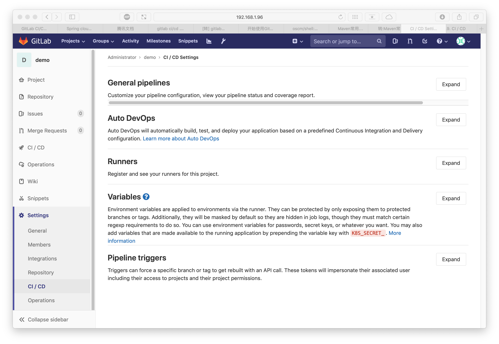
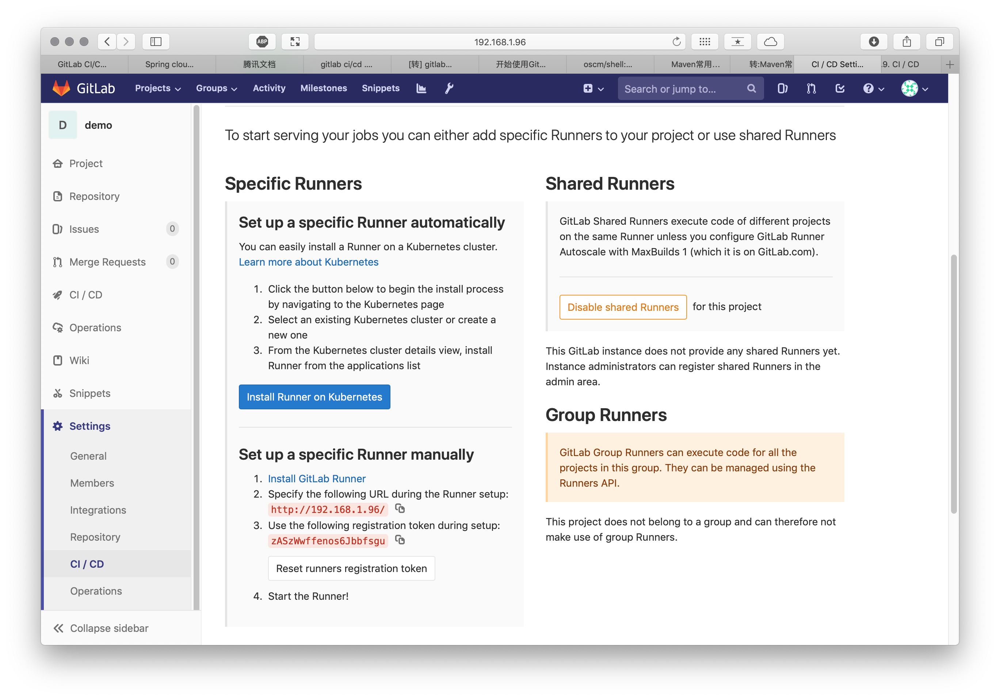
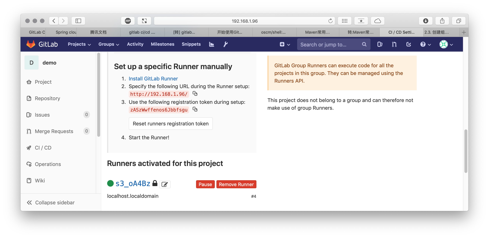

https://gitlab.com/gitlab-examples
[root@localhost ~]# wget -O /usr/local/bin/gitlab-runner https://gitlab-runner-downloads.s3.amazonaws.com/latest/binaries/gitlab-runner-linux-amd64 --2019-06-06 16:19:31-- https://gitlab-runner-downloads.s3.amazonaws.com/latest/binaries/gitlab-runner-linux-amd64 Resolving gitlab-runner-downloads.s3.amazonaws.com (gitlab-runner-downloads.s3.amazonaws.com)... 52.216.10.19 Connecting to gitlab-runner-downloads.s3.amazonaws.com (gitlab-runner-downloads.s3.amazonaws.com)|52.216.10.19|:443... connected. HTTP request sent, awaiting response... 200 OK Length: 30832000 (29M) [application/octet-stream] Saving to: '/usr/local/bin/gitlab-runner' 100%[==================================================================================================================================================================================================>] 30,832,000 113KB/s in 7m 11s 2019-06-06 16:26:44 (69.8 KB/s) - '/usr/local/bin/gitlab-runner' saved [30832000/30832000] [root@localhost ~]# chmod +x /usr/local/bin/gitlab-runner [root@localhost ~]# useradd --comment 'GitLab Runner' --create-home gitlab-runner --shell /bin/bash [root@localhost ~]# gitlab-runner install --user=gitlab-runner --working-directory=/home/gitlab-runner Runtime platform arch=amd64 os=linux pid=113531 revision=ac2a293c version=11.11.2 [root@localhost ~]# gitlab-runner start Runtime platform arch=amd64 os=linux pid=113576 revision=ac2a293c version=11.11.2
[root@localhost ~]# gitlab-runner register
Runtime platform arch=amd64 os=linux pid=114182 revision=ac2a293c version=11.11.2
Running in system-mode.
Please enter the gitlab-ci coordinator URL (e.g. https://gitlab.com/):
http://192.168.1.229/
Please enter the gitlab-ci token for this runner:
5iF88xJLfFgpvRJySam2
Please enter the gitlab-ci description for this runner:
[localhost.localdomain]:
Please enter the gitlab-ci tags for this runner (comma separated):
my-tag,another-tag
Registering runner... succeeded runner=5iF88xJL
Please enter the executor: docker, docker-ssh, parallels, ssh, virtualbox, kubernetes, shell, docker+machine, docker-ssh+machine:
shell
Runner registered successfully. Feel free to start it, but if it's running already the config should be automatically reloaded!
[root@localhost ~]# cat /etc/gitlab-runner/config.toml
concurrent = 1
check_interval = 0
[session_server]
session_timeout = 1800
[[runners]]
name = "localhost.localdomain"
url = "http://192.168.1.229/"
token = "09936a09484934dec93d78ffa49b89"
executor = "shell"
[runners.custom_build_dir]
[runners.cache]
[runners.cache.s3]
[runners.cache.gcs]
进入项目设置界面，点击 Settings，再点击 CI / CD
|  |
点击 Expand 按钮 展开 Runners
|  |
这时可以看到 Set up a specific Runner manually, 后面会用到 http://192.168.1.96/ 和 zASzWwffenos6Jbbfsgu
使用 SSH 登录 Gitlab runner 服务器，运行 gitlab-runner register
[root@localhost ~]# gitlab-runner register
Runtime platform arch=amd64 os=linux pid=92925 revision=ac2a293c version=11.11.2
Running in system-mode.
Please enter the gitlab-ci coordinator URL (e.g. https://gitlab.com/):
http://192.168.1.96/
Please enter the gitlab-ci token for this runner:
zASzWwffenos6Jbbfsgu
Please enter the gitlab-ci description for this runner:
[localhost.localdomain]:
Please enter the gitlab-ci tags for this runner (comma separated):
Registering runner... succeeded runner=zASzWwff
Please enter the executor: docker, docker-ssh, shell, ssh, docker-ssh+machine, parallels, virtualbox, docker+machine, kubernetes:
shell
Runner registered successfully. Feel free to start it, but if it's running already the config should be automatically reloaded!
返回 gitlab 查看注册状态
|  |
image: maven:3.5.0-jdk-8
variables:
MAVEN_OPTS: "-Dmaven.repo.local=.m2/repository"
cache:
paths:
- .m2/repository/
- target/
stages:
- build
- test
- package
build:
stage: build
script: mvn compile
unittest:
stage: test
script: mvn test
package:
stage: package
script: mvn package
artifacts:
paths:
- target/java-project-0.0.1-SNAPSHOT.jar
image: mileschou/php-testing-base:7.0
stages:
- build
- test
- deploy
build_job:
stage: build
script:
- composer install
cache:
untracked: true
artifacts:
paths:
- vendor/
test_job:
stage: test
script:
- php vendor/bin/codecept run
dependencies:
- build_job
deploy_job:
stage: deploy
script:
- echo Deploy OK
only:
- release
when: manual
only:
- master
tags:
- ansible
services: - mysql variables: # Configure mysql service (https://hub.docker.com/_/mysql/) MYSQL_DATABASE: hello_world_test MYSQL_ROOT_PASSWORD: mysql connect: image: mysql script: - echo "SELECT 'OK';" | mysql --user=root --password="$MYSQL_ROOT_PASSWORD" --host=mysql "$MYSQL_DATABASE"
#image: java:8
#image: maven:latest
image: maven:3.5.0-jdk-8
stages:
- build
- test
- package
build:
stage: build
script: mvn compile
unittest:
stage: test
script: mvn test
package:
stage: package
script: mvn package
artifacts:
paths:
- target/java-project-0.0.1-SNAPSHOT.jar
before_script: - echo "Execute scripts which are required to bootstrap the application. !" after_script: - echo "Clean up activity can be done here !." stages: - build - test - package - deploy variables: MAVEN_CLI_OPTS: "--batch-mode" MAVEN_OPTS: "-Dmaven.repo.local=.m2/repository" cache: paths: - .m2/repository/ - target/ build: stage: build image: maven:latest script: - mvn $MAVEN_CLI_OPTS clean compile test: stage: test image: maven:latest script: - mvn $MAVEN_CLI_OPTS test package: stage: package image: maven:latest script: - mvn $MAVEN_CLI_OPTS package artifacts: paths: [target/test-0.0.1.war] deploy_test: stage: deploy script: - echo "######## To be defined ########" environment: staging deploy_prod: stage: deploy script: - echo "######## To be defined ########" only: - master environment: production
build site:
image: node:6
stage: build
script:
- npm install --progress=false
- npm run build
artifacts:
expire_in: 1 week
paths:
- dist
unit test:
image: node:6
stage: test
script:
- npm install --progress=false
- npm run unit
deploy:
image: alpine
stage: deploy
script:
- apk add --no-cache rsync openssh
- mkdir -p ~/.ssh
- echo "$SSH_PRIVATE_KEY" >> ~/.ssh/id_dsa
- chmod 600 ~/.ssh/id_dsa
- echo -e "Host *\n\tStrictHostKeyChecking no\n\n" > ~/.ssh/config
- rsync -rav --delete dist/ user@server.com:/your/project/path/